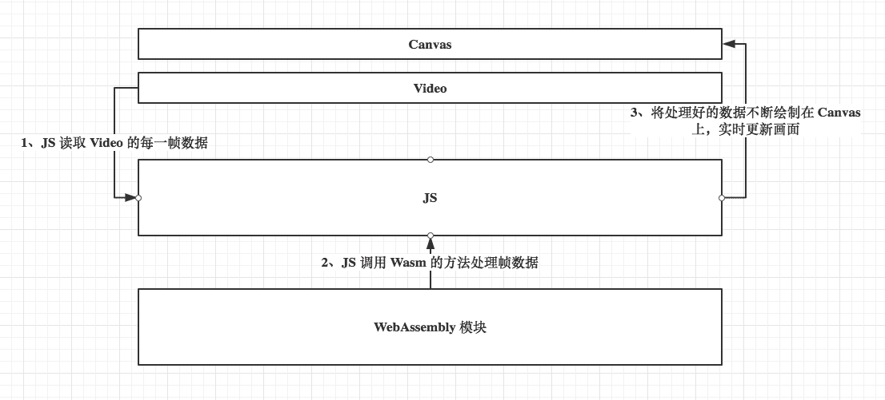

WebAssembly 尝试研究报告 - DIP 实践
从本次报告开始，我们将花一点时间从零开始构建一个基于 WebAssembly 的 DIP（数字图像处理）应用。该应用的主要功能是可以给一段在线视频添加实时滤镜。在 JS 层我们的主要任务是截取视频中的每一帧画面，同时把该帧画面转换成对应的像素矩阵，然后调用 Wasm 模块对这些像素矩阵进行滤镜处理，最后再将处理后的像素矩阵绘制到页面上。对视频进行实时帧像素处理的部分我们会放到 WebAssembly 模块中来实现。
这个项目的源代码可以在这里找到。
先来看一下效果对比图。下面给出的两张图中，第一张为视频经过滤镜处理前的截图效果。第二张为视频经过滤镜处理后的截图效果。本次实验中我们将使用一个卷积核对视频每一帧画面中的像素进行卷积操作，这里使用的卷积核是一个三乘三矩阵[[-1, -1, 1], [-1, 14, -1], [1, -1, -1]]。卷积核是在对图像进行卷积运算时的参数矩阵，常用的卷积核有低通滤波器（模糊效果）、高斯滤波器（基于正态分布）和用于边沿检测的滤波器等。
为了便于更加深入地了解 Web 应用与 WebAssembly 模块的详细交互过程，我们将整个应用的架构图绘制如下：首先我们在页面上放置一个 canvas 标签和一个 video 标签。画布和视频画面的同步都是通过中间的 JS 逻辑层来控制的。JS 首先会读取视频标签返回的每一帧数据，然后将每一帧画面的像素数据传递给 Wasm 进行处理，接下来再将处理好的帧画面数据渲染到画布上，这样应用的整个生命周期就构建完成了。

1、画布视频同步：
首先，我们要实现的是将 video 标签的画面实时地显示在画布上。这部分的代码如下所示：
<!DOCTYPE html>
<html lang="en">
<head>
<meta charset="UTF-8">
<title>SimpleDIP</title>
<style>
#video {
display: none;
}
</style>
</head>
<body>
<canvas id="canvas">
<video id="video" loop="true" autoplay="" src="media/scenery.mp4" type="video/mp4">
</body>
<script>
var video = document.getElementById("video");
var canvas = document.getElementById("canvas");
// 获得画布的绘制上下文；
var context = canvas.getContext("2d");
// 当视频的第一帧完全载入时触发回调；
video.addEventListener("loadeddata", function() {
// 设置画布的大小；
canvas.setAttribute("height", video.videoHeight);
canvas.setAttribute("width", video.videoWidth);
// 获得画布的舞台（可绘制区域）大小；
clientx = canvas.clientWidth;
clienty = canvas.clientHeight;
// 开始绘制；
draw();
});
function draw() {
// 从画布的左上角开始绘制当前视频的第一帧；
context.drawImage(video, 0, 0);
// 获得当前帧画面的 ImageData 对象；
pixels = context.getImageData(0, 0, video.videoWidth, video.videoHeight);
// 调用 Wasm 模块处理该帧像素；
// ...
// 将之前获得 ImageData 对象绘制到画布上；
context.putImageData(pixels, 0, 0);
// 逐帧绘制（通常60帧每秒）；
requestAnimationFrame(draw);
}
</script>
</html>
这部分代码很简单，这里首先根据视频大小来初始化对应大小的画布，接下来通过画布提供的 drawImage 方法来将当前的视频播放帧绘制到画布上，然后再从绘制好的画布上提取像素矩阵。
2、WebAssembly 模块代码：
接下来我们要完成的是 WebAssembly 模块的 C/C++ 代码部分，这部分代码如下所示。算法的具体流程来自 Github 的开源项目。我们需要注意的是要为导出的方法添加 Emscripten 编译器后端对应的宏以保证该方法不会被编译器清除（DCE）。
// program.cpp
#include <emscripten/emscripten.h>
#include <math.h>
extern "C" {
void EMSCRIPTEN_KEEPALIVE convFilter (float* data, int width, int height, float* kern, int kWidth, int kHeight, float divisor, float bias, int count) {
float r, g, b;
int yy, xx, imageOffset, kernelOffset, pix;
int kCenterY = floor(kHeight / 2);
int kCenterX = floor(kWidth / 2);
for (int i = 0; i < count; ++i) {
for (int y = kCenterY; y < height - kCenterY; ++y) {
for (int x = kCenterX; x < width - kCenterX; ++x) {
r = 0;
g = 0;
b = 0;
for (int ky = 0; ky < kHeight; ++ky) {
for (int kx = 0; kx < kWidth; ++kx) {
imageOffset = (width * (y - kCenterY + ky) + (x - kCenterX + kx)) * 4;
kernelOffset = kWidth * ky + kx;
// 对当前像素点进行卷积操作；
r += data[imageOffset + 0] * kern[kernelOffset];
g += data[imageOffset + 1] * kern[kernelOffset];
b += data[imageOffset + 2] * kern[kernelOffset];
}
}
pix = (width * y + x) * 4;
data[pix + 0] = ((r / divisor)>255.0) ? 255.0 : ((r / divisor)<0.0) ? 0.0 : r / divisor;
data[pix + 1] = ((g / divisor)>255.0) ? 255.0 : ((g / divisor)<0.0) ? 0.0 : g / divisor;
data[pix + 2] = ((b / divisor)>255.0) ? 255.0 : ((b / divisor)<0.0) ? 0.0 : b / divisor;
}
}
}
}
}
代码写好后，我们可以使用 Emscripten 的编译器前端工具 emcc 来编译 C++ 源码到对应的 Wast 二进制格式。命令如下所示：
emcc -s WASM=1 -s ALLOW_MEMORY_GROWTH=1 -O3 -o program.js program.cpp
上述编译命令的使用方法与我们之前报告中的用法基本相同，其中新加入的 LOW_MEMORY_GROWTH 参数允许 Wasm 模块在使用时根据应用程序的使用情况自动扩大自身的可用内存。由于我们很难估计模块在处理帧数据时会消耗多少内存，因此无法在程序初始化时为模块创建固定大小的内存对象。在这里我们将内存大小管理完全交由应用自己进行控制。
3、Emscripten Glue 连接应用：
接下来最后一步我们需要将 Wasm 模块和 JS 的逻辑层进行连接。在“连接”的过程中我们需要使用 Emscripten 为我们生成的的前端“胶水”工具。这部分 JS 逻辑层的代码我们单独放到一个文件中。代码如下所示：
// dip.js
var Module = {};
function loadWASM() {
return new Promise((resolve, reject) => {
fetch("./program.wasm")
.then(response => response.arrayBuffer())
.then(buffer => {
// 初始化 Wasm 模块；
Module.wasmBinary = buffer;
// 加载 Emscripten "胶水"模块；
var script = document.createElement("script");
script.src = "./program.js";
document.body.appendChild(script);
// 加载完成后初始化像素过滤方法；
window.onload = function() {
var filter = function(pixelData, width, height) {
// 设置卷积核；
var kernel = [[-1, -1, 1], [-1, 14, -1], [1, -1, -1]];
var divisor = 3;
const arLen = pixelData.length;
//
const memData = _malloc(arLen * Float32Array.BYTES_PER_ELEMENT);
// var memory = new Float32Array(Module.wasmMemory.buffer);
// memory.set(pixelData, memData / Float32Array.BYTES_PER_ELEMENT);
HEAPF32.set(pixelData, memData / Float32Array.BYTES_PER_ELEMENT);
const kerWidth = kernel[0].length;
const kerHeight = kernel.length;
const kerLen = kerWidth * kerHeight;
const flatKernel = kernel.reduce((acc, cur) => acc.concat(cur));
const memKernel = _malloc(kerLen * Float32Array.BYTES_PER_ELEMENT);
HEAPF32.set(flatKernel, memKernel / Float32Array.BYTES_PER_ELEMENT);
// 处理像素矩阵；
_convFilter(memData, width, height, memKernel, 3, 3, divisor, 0, 1);
const filtered = HEAPF32.subarray(memData / Float32Array.BYTES_PER_ELEMENT, memData / Float32Array.BYTES_PER_ELEMENT + arLen);
// 释放内存；
_free(memData);
_free(memKernel);
return filtered;
}
resolve(filter);
}
});
});
}
在上述代码中，我们需要手动为像素矩阵分配内存。这里的 _malloc 和 _free 等方法都是由 Emscripten 工具链为我们提供的以用来在前端分配和释放内存的方法。代码中的 HEAPF32 是一个包含了 WebAssembly.Memoory 对象的 TypedArray 类型，我们可以直接使用它的 set 方法来将数据以“32位浮点”的类型写入到内存中。这里要注意线性内存地址是以1字节为单位的，1字节等于 4bytes，我们使用的 Float32Array 类型是以 32bytes 为单位，因此对应8字节偏移需要将新分配的内存地址除以8。如果不想使用 HEAPF32 来操作内存，我们也可以自己通过 TypedArray 进行封装，具体可以查看代码注释的两行。最后将上述 JS 文件起名为 ”dip.js“ 并插入到之前的超文本页面中，这里我们还需要在超文本页面中的脚本加入初始化 Wasm 模块和调用对应方法的逻辑，修改后的超文本页面代码如下所示：
<!DOCTYPE html>
<html lang="en">
<head>
<meta charset="UTF-8">
<title>SimpleDIP</title>
<style>
#video {
display: none;
}
</style>
</head>
<body>
<canvas id="canvas">
<video id="video" loop="true" autoplay="" src="media/scenery.mp4" type="video/mp4">
</body>
<script src = "./dip.js" type = "text/javascript"></script>
<script>
loadWASM().then(filter => {
var video = document.getElementById("video");
var canvas = document.getElementById("canvas");
// 获得画布的绘制上下文；
var context = canvas.getContext("2d");
// 当视频的第一帧完全载入时触发回调；
video.addEventListener("loadeddata", function() {
// 设置画布的大小；
canvas.setAttribute("height", video.videoHeight);
canvas.setAttribute("width", video.videoWidth);
// 获得画布的舞台（可绘制区域）大小；
clientx = canvas.clientWidth;
clienty = canvas.clientHeight;
// 开始绘制；
draw();
});
function draw() {
// 从画布的左上角开始绘制当前视频的第一帧；
context.drawImage(video, 0, 0);
// 获得当前帧画面的 ImageData 对象；
pixels = context.getImageData(0, 0, video.videoWidth, video.videoHeight);
pixels.data.set(filter(pixels.data, clientx, clienty));
// 将之前获得 ImageData 对象绘制到画布上；
context.putImageData(pixels, 0, 0);
// 逐帧绘制（通常60帧每秒）；
requestAnimationFrame(draw);
}
});
</script>
</html>
至此，这个简单的 DIP 应用便完成了。